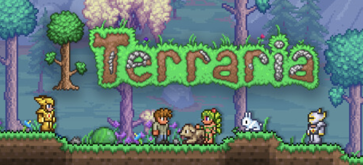

Dig. Build. Discover.
Welcome to Terraria
A small character. A world full of possibilities.
Explore a 2D world, collect resources, create your own base, and prepare for your next adventure.
Get StartedFeatures
Explore the World
Players can explore forests, caves, deserts, oceans, and many other areas while finding new items and materials.
Build and Create
Terraria allows players to collect materials and build houses, bases, and other creative structures.
Fight Enemies
Players can fight monsters and bosses and collect stronger weapons, armor, and equipment.
Featured Content
One interesting part of Terraria is that exploration, building, and combat are connected. As players explore more areas, they can find better resources and unlock new challenges.

Different Biomes
Terraria has many biomes, including forests, deserts, jungles, oceans, and underground caves. Each biome has different enemies, resources, and items.
Bosses and Progression
Players progress by improving their equipment and defeating bosses. Some bosses unlock new areas, materials, and harder challenges.
Ready to Explore?
Learn more about Terraria and discover more about the game.
Visit the Official Terraria Website